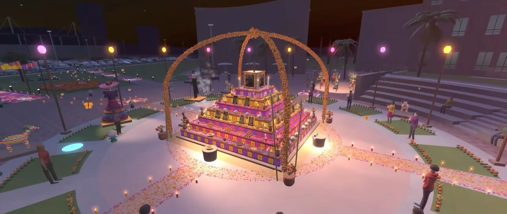
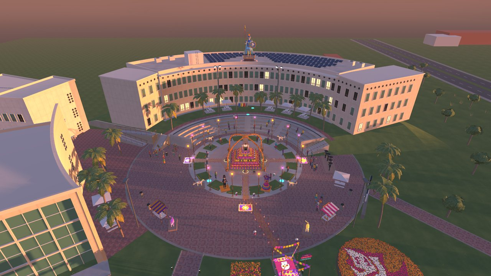
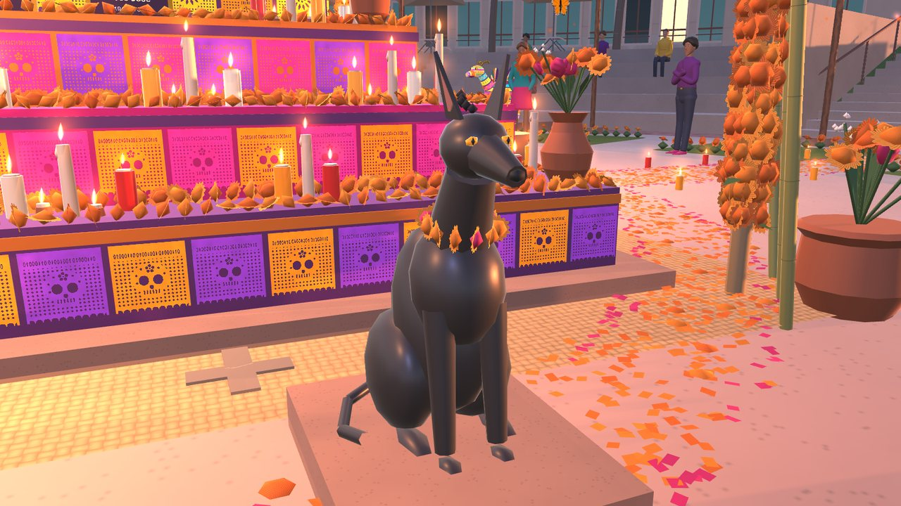
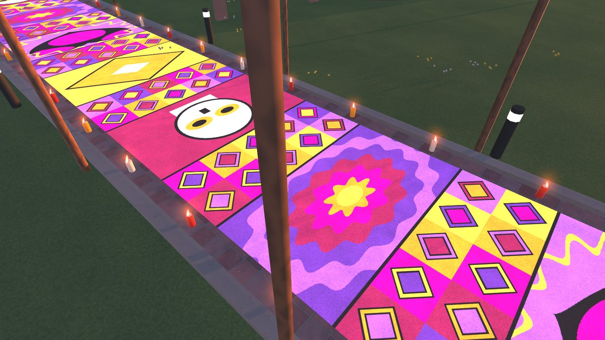
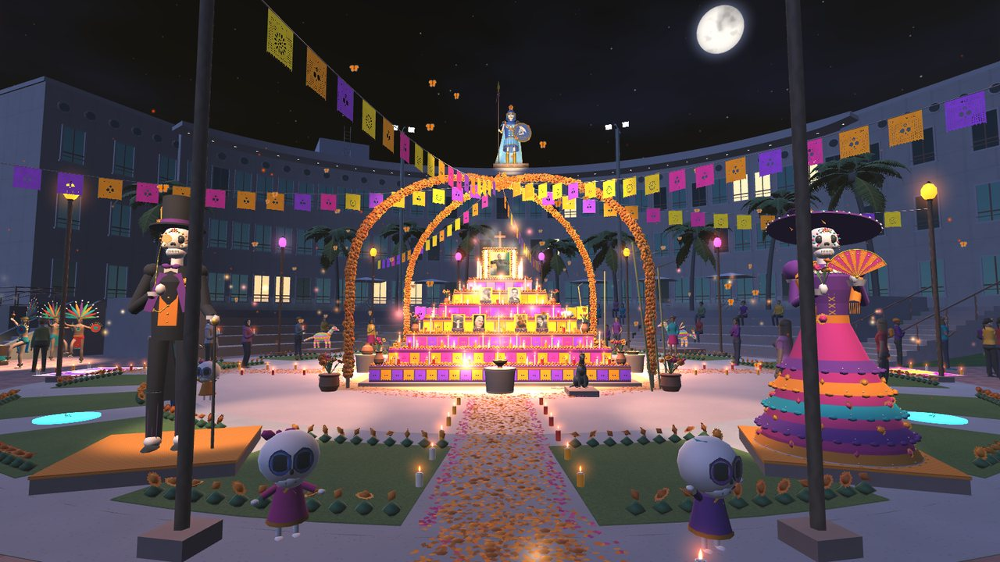

01
Bienvenidas, ánimas
Un arco de cempasúchil abre el camino de aserrín, bordeado de veladoras y bajo papel picado.
Primer lugar, Altar Alternativo, XIV Concurso de Altares FIF 2026
Un altar de muertos de siete niveles en el centro de la explanada de la Facultad de Informática de la UAQ, recreada en Unity.
No es una ofrenda para mirar. Se *recorre,* se *arma* con cuatro rituales y al final se le *deja* *un* *nombre.*

Cada cara de la pirámide mira a un rumbo y guarda un elemento. Al activar los cuatro, el cielo se oscurece y llegan las ánimas por el camino de cempasúchil.

La explanada de la Facultad, medida y recreada a escala, se llena de tradición alrededor de la ofrenda.
01 de 06
01
Un arco de cempasúchil abre el camino de aserrín, bordeado de veladoras y bajo papel picado.
02
El edificio curvo, las gradas, las jardineras y el medallón central, medidos sobre la vista aérea de la explanada.
03
Cada ritual oscurece el cielo un paso. Con el cuarto, las veladoras alumbran el camino de las ánimas.
04
Guitarrón, vihuela, violín y trompeta tocan para las ánimas frente a la bandera de los Troyanos.
05
Con penacho, sonajas y cascabeles, bailan en círculo alrededor del huéhuetl y el copal.
06
Desde el techo del edificio curvo, un catrín troyano recuerda a los troyanos de la Facultad.








Toda la escena sale de código en C#, a partir de fotos de la explanada y de la vista aérea de Google Maps.
Radios medidos sobre la vista aérea con su barra de escala de 20 m, dibujados a la misma escala.
Tomé fotos de la explanada, los edificios, las gradas, el letrero y las jardineras, y saqué las medidas de la vista aérea usando su barra de escala.
La primera versión salió 1.6 veces más grande porque calculé a ojo. La corregí empalmando la vista desde arriba de Unity sobre la foto satelital hasta que coincidieron.
Edificios, pirámide, comida, flores, papel picado y personajes son geometría generada en C#. Cualquier medida se corrige y la escena se vuelve a generar en segundos.
Al señalar cualquier elemento aparece su significado en la tradición y de dónde sale: INPI, Profeco, UNESCO y otras. El papel picado lleva FIF y UAQ cortados en binario.
Sin instalar nada. Mejor en Chrome o Edge, en computadora, con teclado y ratón.
Descomprime y abre el .exe. Si aparece "Windows protegió su PC", elige Más información y Ejecutar de todas formas.
Descomprime y la primera vez abre la app con clic derecho y Abrir, porque no está firmada por Apple.
Realidad aumentada: la ofrenda aparece sobre cualquier superficie con la cámara del celular.
El código completo en GitHub, bajo licencia MIT. Se abre con Unity 6000.5.6f1.